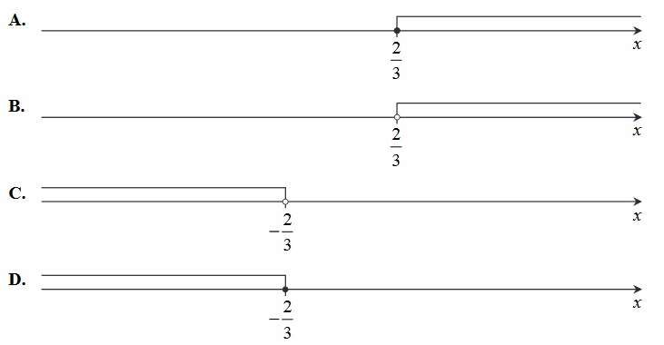
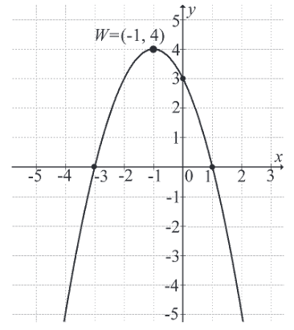
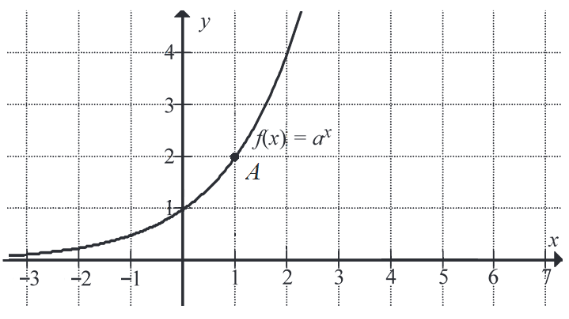
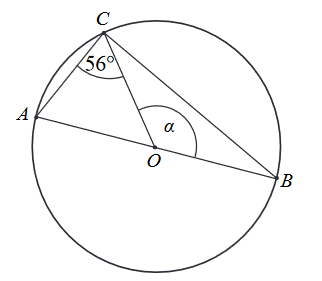
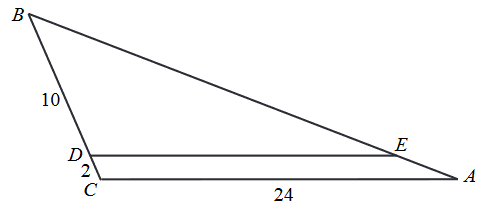
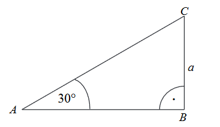
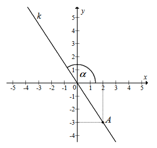
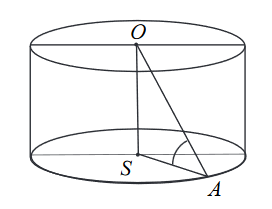
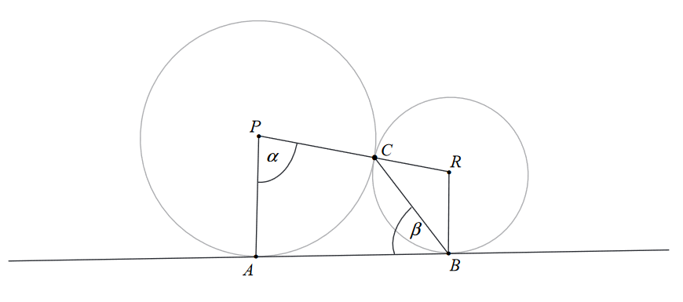

Matura 2017 maj
Liczba \(5^8\cdot 16^{-2}\) jest równa:
A.\( 10^8 \)
B.\( \left(\frac{5}{2}\right)^8 \)
C.\( 10 \)
D.\( \frac{5}{2} \)
B
Liczba \(\sqrt[3]{54}-\sqrt[3]{2}\) jest równa
A.\( 3 \)
B.\( 2 \)
C.\( \sqrt[3]{52} \)
D.\( 2\sqrt[3]{2} \)
D
Liczba \(2\log_23-2\log_25\) jest równa
A.\( \log_2 \frac{3}{5} \)
B.\( \log_2 \frac{9}{5} \)
C.\( \log_2 \frac{6}{25} \)
D.\( \log_2 \frac{9}{25} \)
D
Liczba osobników pewnego zagrożonego wyginięciem gatunku zwierząt wzrosła w
stosunku do liczby tych zwierząt z 31 grudnia 2011 r. o \(120\%\) i obecnie jest równa \(8910\). Ile
zwierząt liczyła populacja tego gatunku w ostatnim dniu 2011 roku?
A.\( 1782 \)
B.\( 4050 \)
C.\( 7128 \)
D.\( 7425 \)
B
Równość \((x\sqrt{2}-2)^2=(2+\sqrt{2})^2\) jest
A.fałszywa dla każdej liczby \( x \)
B.prawdziwa dla \( x=-\sqrt{2} \)
C.prawdziwa dla \( x=\sqrt{2} \)
D.prawdziwa dla \( x=-1\)
D
Do zbioru rozwiązań nierówności \((x^4+1)(2-x)\gt 0\)
nie
należy liczba:
A.\( 1 \)
B.\( -1 \)
C.\( 3 \)
D.\( -3 \)
C
Wskaż rysunek, na którym jest przedstawiony zbiór wszystkich rozwiązań nierówności
\(2-3x\ge 4\). 
D
Równanie \(x(x^2-4)(x^2+4)=0\) z niewiadomą \(x\)
A.nie ma rozwiązań w zbiorze liczb rzeczywistych
B.ma dokładnie dwa rozwiązania w zbiorze liczb rzeczywistych
C.ma dokładnie trzy rozwiązania w zbiorze liczb rzeczywistych
D.ma dokładnie pięć rozwiązania w zbiorze liczb rzeczywistych
C
Miejscem zerowym funkcji liniowej \(f(x)=\sqrt{3}(x+1)-12\) jest liczba
A.\( \sqrt{3}-4 \)
B.\( -2\sqrt{3}+1 \)
C.\( 4\sqrt{3}-1 \)
D.\( -\sqrt{3}+12 \)
C
Na rysunku przedstawiono fragment wykresu funkcji kwadratowej \(f(x)=ax^2+bx+c\), o
miejscach zerowych: \(-3\) i \(1\).  Współczynnik \(c\) we wzorze funkcji \(f\) jest równy
A.\( 1 \)
B.\( 2 \)
C.\( 3 \)
D.\( 4 \)
C
Na rysunku przedstawiono fragment wykresu funkcji wykładniczej \(f\) określonej
wzorem \(f(x)=a^x\). Punkt \(A=(1,2)\) należy do wykresu funkcji.  Podstawa \(a\) potęgi jest równa
A.\( -\frac{1}{2} \)
B.\( \frac{1}{2} \)
C.\( -2 \)
D.\( 2 \)
D
W ciągu arytmetycznym \(a_n\), określonym dla \(n\ge 1\), dane są: \(a_1=5\),
\(a_2=11\). Wtedy
A.\( a_{14}=71 \)
B.\( a_{12}=71 \)
C.\( a_{11}=71 \)
D.\( a_{10}=71 \)
B
Dany jest trójwyrazowy ciąg geometryczny \((24,6,a-1)\). Stąd wynika, że
A.\( a=\frac{5}{2} \)
B.\( a=\frac{2}{5} \)
C.\( a=\frac{3}{2} \)
D.\( a=\frac{2}{3} \)
A
Jeżeli \(m=\sin 50^\circ \), to
A.\( m=\sin 40^\circ \)
B.\( m=\cos 40^\circ \)
C.\( m=\cos 50^\circ \)
D.\( m=\operatorname{tg} 50^\circ \)
B
Na okręgu o środku w punkcie \(O\) leży punkt \(C\) (zobacz rysunek). Odcinek
\(AB\) jest średnicą tego okręgu. Zaznaczony na rysunku kąt środkowy \(\alpha \) ma miarę 
A.\( 116^\circ \)
B.\( 114^\circ \)
C.\( 112^\circ \)
D.\( 110^\circ \)
C
W trójkącie \(ABC\) punkt \(D\) leży na boku \(BC\), a punkt \(E\) leży na boku
\(AB\). Odcinek \(DE\) jest równoległy do boku \(AC\), a ponadto \(|BD|=10\), \(|BC|=12\) i
\(|AC|=24\) (zobacz rysunek). 
Długość odcinka \(DE\) jest równa
A.\( 22 \)
B.\( 20 \)
C.\( 12 \)
D.\( 11 \)
B
Obwód trójkąta przedstawionego na rysunku jest równy 
A.\( \left(3+\frac{\sqrt{3}}{2}\right)a \)
B.\( \left(2+\frac{\sqrt{2}}{2}\right)a \)
C.\( (3+\sqrt{3})a \)
D.\( (2+\sqrt{2})a \)
C
Na rysunku przedstawiona jest prosta \(k\) o równaniu \(y=ax\), przechodząca przez
punkt \(A=(2,-3)\) i przez początek układu współrzędnych, oraz zaznaczony jest kąt \(\alpha \)
nachylenia tej prostej od osi \(Ox\).  Zatem
A.\( a=-\frac{2}{3} \)
B.\( a=-\frac{3}{2} \)
C.\( a=\frac{2}{3} \)
D.\( a=\frac{3}{2} \)
B
Na płaszczyźnie z układem współrzędnych proste \(k\) i \(l\) przecinają się pod
kątem prostym w punkcie \(A=(-2,4)\). Prosta \(k\) jest określona równaniem
\(y=-\frac{1}{4}x+\frac{7}{2}\). Zatem prostą \(l\) opisuje równanie
A.\( y=\frac{1}{4}x+\frac{7}{2} \)
B.\( y=-\frac{1}{4}x-\frac{7}{2} \)
C.\( y=4x-12 \)
D.\( y=4x+12 \)
D
Dany jest okrąg o środku \(S=(2,3)\) i promieniu \(r=5\). Który z podanych punktów
leży na tym okręgu?
A.\( A=(-1,7) \)
B.\( B=(2,-3) \)
C.\( C=(3,2) \)
D.\( D=(5,3) \)
A
Pole powierzchni całkowitej graniastosłupa prawidłowego czworokątnego, w którym
wysokość jest \(3\) razy dłuższa od krawędzi podstawy, jest równe \(140\). Zatem krawędź podstawy
tego graniastosłupa jest równa
A.\( \sqrt{10} \)
B.\( 3\sqrt{10} \)
C.\( \sqrt{42} \)
D.\( 3\sqrt{42} \)
A
Promień \(AS\) podstawy walca jest równy wysokości \(OS\) tego walca. Sinus kąta
\(OAS\) (zobacz rysunek) jest równy 
A.\( \frac{1}{2} \)
B.\( \frac{\sqrt{2}}{2} \)
C.\( \frac{\sqrt{3}}{2} \)
D.\( 1 \)
B
Dany jest stożek o wysokości \(4\) i średnicy podstawy \(12\). Objętość tego stożka
jest równa
A.\( 576\pi \)
B.\( 192\pi \)
C.\( 144\pi \)
D.\( 48\pi \)
D
Średnia arytmetyczna ośmiu liczb: \(3,5,7,9,x,15,17,19\) jest równa \(11\). Wtedy
A.\( x=1 \)
B.\( x=2 \)
C.\( x=11 \)
D.\( x=13 \)
D
Ze zbioru dwudziestu czterech kolejnych liczb naturalnych od \(1\) do \(24\)
losujemy jedną liczbę. Niech \(A\) oznacza zdarzenie, że wylosowana liczba będzie dzielnikiem
\(24\). Wtedy prawdopodobieństwo zdarzenia \(A\) jest równe
A.\( \frac{1}{4} \)
B.\( \frac{1}{3} \)
C.\( \frac{1}{8} \)
D.\( \frac{1}{6} \)
B
Rozwiąż nierówność \(8x^2-72x\le 0\).
\(x\in \langle0,9 \rangle \)
Wykaż, że liczba \(4^{2017}+4^{2018}+4^{2019}+4^{2020}\) jest podzielna przez
\(17\).
Dane są dwa okręgi o środkach w punktach \(P\) i \(R\), styczne zewnętrznie w
punkcie \(C\). Prosta \(AB\) jest styczna do obu okręgów odpowiednio w punktach \(A\) i \(B\) oraz
\(|\sphericalangle APC|=\alpha \) i \(|\sphericalangle ABC|=\beta \) (zobacz rysunek). Wykaż, że
\(\alpha =180^\circ -2\beta \). 
Funkcja kwadratowa \(f\) jest określona dla wszystkich liczb rzeczywistych \(x\)
wzorem \(f(x)=ax^2+bx+c.\) Największa wartość funkcji \(f\) jest równa \(6\) oraz
\(f(-6)=f(0)=\frac{3}{2}\). Oblicz wartość współczynnika \(a\).
\(a=-\frac{1}{2}\)
Przeciwprostokątna trójkąta prostokątnego ma długość \(26\) cm, a jedna z
przyprostokątnych jest o \(14\) cm dłuższa od drugiej. Oblicz obwód tego trójkąta.
\(60\)
W ciągu arytmetycznym \((a_n)\), określonym dla \(n\ge 1\), dane są: wyraz
\(a_1=8\) i suma trzech początkowych wyrazów tego ciągu \(S_3=33\). Oblicz różnicę:
\(a_{16}-a_{13}\).
\(9\)
Dane są punkty \(A=(-4,0)\) i \(M=(2,9)\) oraz prosta \(k\) o równaniu
\(y=-2x+10\). Wierzchołek \(B\) trójkąta \(ABC\) to punkt przecięcia prostej \(k\) z osią \(Ox\)
układu współrzędnych, a wierzchołek \(C\) jest punktem przecięcia prostej \(k\) z prostą \(AM\).
Oblicz pole trójkąta \(ABC\).
\(\frac{243}{7}\)
Ze zbioru wszystkich liczb naturalnych dwucyfrowych losujemy jedną liczbę. Oblicz
prawdopodobieństwo zdarzenia, że wylosujemy liczbę, która jest równocześnie mniejsza od \(40\) i
podzielna przez \(3\). Wynik podaj w postaci ułamka zwykłego nieskracalnego.
\(\frac{1}{9}\)
W ostrosłupie prawidłowym trójkątnym wysokość ściany bocznej prostopadła do
krawędzi podstawy ostrosłupa jest równa \(\frac{5\sqrt{3}}{4}\), a pole powierzchni bocznej tego
ostrosłupa jest równe \(\frac{15\sqrt{3}}{4}\). Oblicz objętość tego ostrosłupa.
\(V=\frac{\sqrt{209}}{12}\)